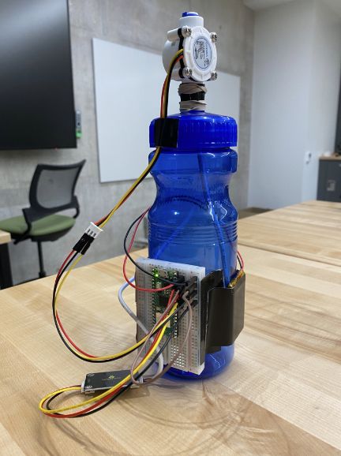

Project
Smart Water Bottle
DSC 190 IoT
In this final project, we use the Rasperry Pi Pico W coupled with water flow and water quality sensors to create a smart water bottle that tracks user’s daily drinking habits.
MQTT
MQTT (Message Queuing Telemetry Transport) is a lightweight messaging protocol that is designed for low-bandwidth, high-latency, and low-cost networks. It enables devices to communicate with each other over the Internet with minimal resource utilization. To send a sensor data to MQTT through a Raspberry Pi, first you have to set up the Pi board to act as an MQTT broker. This can be done by installing the Mosquitto MQTT broker on the Pi. Once the broker is installed and running, you can connect your sensor to the Pi and write a script to collect the sensor data and publish it to the broker. You can also use the MQTT libraries for Python or C++ to make things easier.
In our use case, we employ micro-python to transfer and collect sensor data from the MQTT server by a series of actions. We kick off by importing four modules of Python code, such as Wi-Fi connectivity, controlling the pace of the code, GPIO pins access and MQTT. To ensure a successful operation we must first handle the WiFi connection since it is essential for sending any data to the server. We need to make sure that WiFi components are in working condition so that a secure connection is established. Once we ensure proper functioning of them, then only further steps can be taken for sending/collecting sensor data through micropython to/from the MQTT server. This integration helps us in analyzing real-time processing capabilities and optimize our systems better with enhanced efficiency. Therefore WiFi connectivity are highly important in our schematics and requires utmost attention from us for functioning without any errors or discrepancies whatsoever.
We can create an object of a sensor on micropython to connect our water sensors to one of the GPIO pins (say, GPIO 26) of the Raspberry Pi Pico W. Once we are certain that both the sensors and MCU are linked with the WiFi network, we can proceed with setting up credentials to access our MQTT server. We need four variables- broker URL for our MQTT, client_id, topic and message-to store in this case. Here, we shall use a publicly available broker for ease and convenience. The topic is that subject which subscribers will be listening to while the message is what they will get when they look it up.
We create an object, dubbed “client” for our project which stores the client_id, MQTT broker details and an option to keep the connection live for one hour. After that, our next endeavor is to initiate a constant monitoring loop; this loop is used to check whether any data is detected by the sensor or not. If any activity is detected by the sensor then it triggers a message via MQTT using our topic and message that we specified earlier. This process allows us adequate time so our sensor can reset itself before being ready for detecting further events.
To keep things running smoothly and ensure optimal results, we had incorporated several additional layers like checking if all connections are active or not; if all connections are successfully established then only messages will be transmitted via MQTT protocol abiding by user defined values such as topics or message contents. Furthermore, each cycle within the loop comprises two stages: firstly transmitting a signal over MQTT protocol followed by taking a break in order for the sensor to reset itself immediately after triggering a single event.
Furthermore, with this method we can easily detect even minor changes in activities associated with sensors and take appropriate actions accordingly instead of waiting for dramatic shifts in readings which could result in faulty interpretations or no action whatsoever on part of system operators depending upon the scenario at hand. Therefore this automated detection & notification system based upon triggered sensors coupled with secure encryption protocols (such as HTTPS) provides us peace of mind along with efficient operation & management experience essential to optimize performance within most setup, making it an irreplaceable asset as parts of our projects.
Picture of Smart Water Bottle

Pycom LTE
Background:
LTE (Long Term Evolution) is a fourth-generation (4G) cellular network technology that provides high-speed data services to mobile phone users. LTE was invented as part of the move away from 3G technology, providing greater speed and capacity for users accessing the internet on their mobile devices.
Pycom offers a range of embedded computing devices powered by their own ESP32 microcontroller and running custom, open source software called MicroPython. Through their products, Pycom enables developers to easily build IoT applications with LTE connectivity. These products allow developers to connect any device (such as a wind turbine or drone) to the cloud via LTE networks and send data securely over the air. With this they can monitor anything from environment variables such as humidity or position, track objects, create powerful visualizations and prototyping solutions for the Internet of Things (IoT).
In particular, Pycom offers a range of LTE-capable devices that are designed to let users connect wirelessly and send messages over long distances. To enable LTE in Pycom products, users need to first register the device using the relevant network operator’s website. Once registered, users can leverage the LTE connection to send messages from the device by using one of Pycom’s proprietary development boards, like the LoPy4 or FiPy, depending on their requirements.
Our Implementation:
-
Insert your SIM card into the SIM card slot located on the bottom side of FiPy. Make sure it’s properly connected and does not come loose when you move the device.
-
Next, attach the LTE-M antenna (used when connecting to LTE CAT-M1 or NB-IoT) to the other end of FiPy at the bottom in the U.FL connector . Ensure that it is securely connected and locked in place before proceeding to next steps. Notice that the LTE-M antenna does not work with other LTE networks, such as LTE on cell phones.
CAT-M1 vs NB-IoT Different LTE-M protocols used by FiPy CAT-M1 1.4 MHz radio channel size, 375 kbps of throughput Optimized for coverage and long battery life Similar to previous LTE standards Cat-NB1 (aka NB-IoT ) 200 kHz radio channel, 60 kbps of uplink speed Optimized for ultra low throughput for IoT device with long battery life Does not offer full IP connectivity and does not support mobility (need to reconnect when moving between cells)
-
Finally, turn on FiPy device by pressing and holding its power button for several seconds until you see a blue LED light up which indicates that LTE network is activated and ready for use
-
Implement the LTE methods to enable it on the Pycom. Steps to follow: here (slides 9-15).